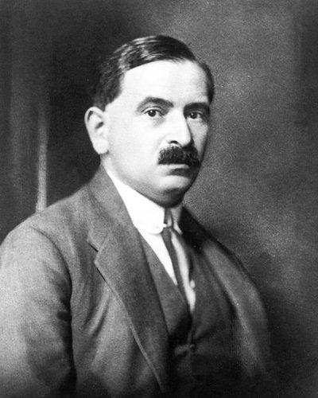

Ideologies / Radical Left
What is Austromarxism?
Austromarxism is a political ideology in the Radical Left family. Bauer treats the nation as a real community of character formed by a shared history, not as an illusion that socialism will dissolve. Writing in the multinational Habsburg empire, he proposes that each nation govern its own schools and culture as an association of persons wherever they live, not as a territory, while sharing one state and one economy. Socialism, he argues, would open national culture to the whole people for the first time. The current he led sought a course between reformist social democracy and Bolshevism.
Socialism joined to cultural autonomy for every nation.
Defined from: Otto Bauer, The Question of Nationalities and Social Democracy (1907)
See how close you are to Austromarxism Dare a friend to answer as one


Where Austromarxism stands on 13 axes
Each axis runs from 0 to 100. A score of 50 is the middle. On a classic compass it sits in the Libertarian Left quadrant.
| Axis | Position | Score | In words |
|---|---|---|---|
| EconomyMarket to Planned | 75 | Strongly Planned | |
| OwnershipPrivate to Collective | 85 | Very strongly Collective | |
| RightsLiberty to Security | 35 | Leans Liberty | |
| GovernmentDemocracy to Autocracy | 10 | Very strongly Democracy | |
| StructureDecentralised to Centralised | 45 | Balanced | |
| NationInternationalist to Nationalist | 40 | Leans Internationalist | |
| ImmigrationMulticulturalist to Assimilationist | 10 | Very strongly Multiculturalist | |
| ValuesProgressive to Traditional | 30 | Strongly Progressive | |
| TechnologyAccelerationist to Precautionary | 20 | Strongly Accelerationist | |
| EnvironmentIndustrialist to Environmentalist | 25 | Strongly Industrialist | |
| ReligionSecular to Religious | 5 | Very strongly Secular | |
| MilitaryPacifist to Militarist | 35 | Leans Pacifist | |
| TradeFree Trade to Protectionist | 50 | Balanced |
Ideologies closest to Austromarxism
- Eurocommunism89% alike
- Democratic Socialism88% alike
- Market Socialism85% alike
- Cybernetic Socialism84% alike
- De Leonism83% alike
Its opposite on this map is Kokutai Thought, at 28%.
Parties near Austromarxism
Social Democratic Workers' Party of Austria (Austria) was the first party or movement to carry it, placed here from The Linz Programme (1926).
- Russian Social Democratic Labour Party of 1903Russia. Programme of the Russian Social Democratic Labour Party (1903)88% alike
- Social Democratic Party of 1891Germany. The Erfurt Programme (1891)86% alike
- Social Democratic Workers' Party of AustriaAustria. The Linz Programme (1926)86% alike
- Popular UnityChile. Programa básico de gobierno de la Unidad Popular (1969)84% alike
Common questions
What is Austromarxism?
Austromarxism is a political ideology in the Radical Left family. Bauer treats the nation as a real community of character formed by a shared history, not as an illusion that socialism will dissolve. Writing in the multinational Habsburg empire, he proposes that each nation govern its own schools and culture as an association of persons wherever they live, not as a territory, while sharing one state and one economy. Socialism, he argues, would open national culture to the whole people for the first time. The current he led sought a course between reformist social democracy and Bolshevism.
What does Austromarxism believe?
In one line: Socialism joined to cultural autonomy for every nation. Its strongest positions are Secular, Democracy, Multiculturalist. Bauer treats the nation as a real community of character formed by a shared history, not as an illusion that socialism will dissolve. Writing in the multinational Habsburg empire, he proposes that each nation govern its own schools and culture as an association of persons wherever they live, not as a territory, while sharing one state and one economy. Socialism, he argues, would open national culture to the whole people for the first time. The current he led sought a course between reformist social democracy and Bolshevism.
Who founded Austromarxism?
Austromarxism is defined here from The Question of Nationalities and Social Democracy (1907) by Otto Bauer. The thinker most tied to it is Otto Bauer (1881 to 1938).
Is Austromarxism left wing or right wing?
On a classic two axis compass Austromarxism falls in the Libertarian Left quadrant, which means the economic left and the libertarian side. Left and right hide a lot, though, which is why EthosScales scores it on thirteen separate axes.
How is Austromarxism different from Eurocommunism?
They are close: 89% alike. The biggest gaps are on Immigration, where Austromarxism scores 10 and Eurocommunism scores 25, and Economy, where Austromarxism scores 75 and Eurocommunism scores 65. On each axis, 0 is one end and 100 is the other.
Think this is wrong? Suggest a correction. The scores are editorial estimates.